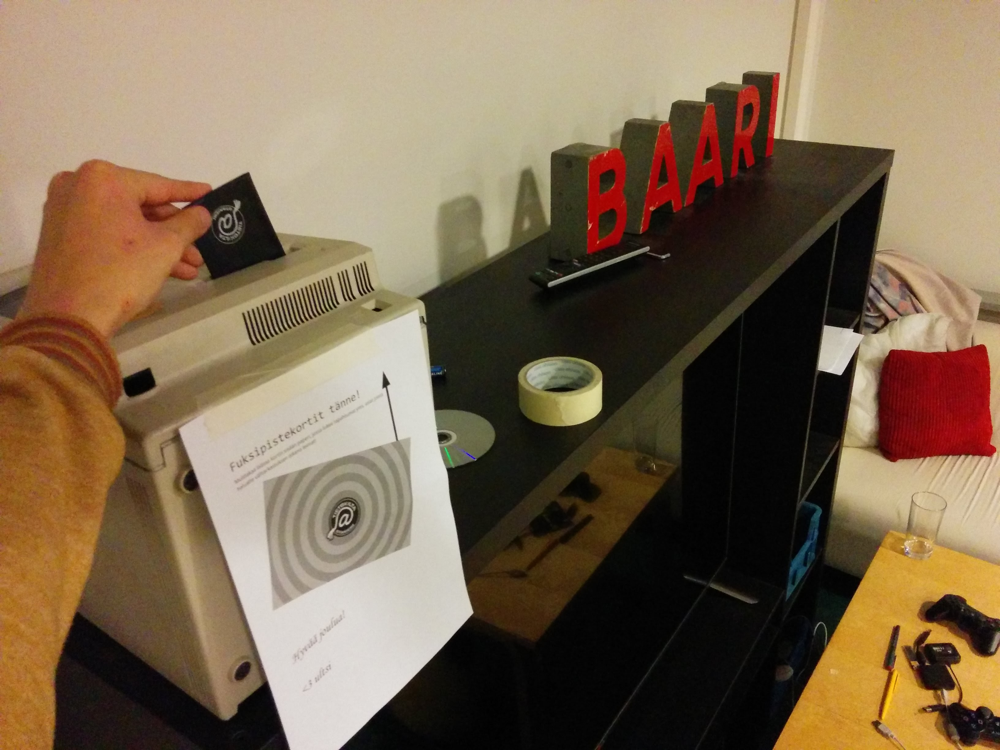

Waarin viikkotiedote 15 - toka tenttiviikko!
08.12.2015 fuksit / viikkotiedote / waarin wartit / fuksicruise /
Se on Eclipseeeee!
Huh! Lanit painavat päälle surkean unirytmin muodossa vieläkin, mutta väsynein silmin waarinmaili pamahtaa eteenpäin. Olkaas hyvät!
Pakko kiittää ja aploodeerata vielä fuksispeksille, se oli aivan mahtava. Loistavaa heittäytymistä kaikilta ja varsinkin laulut olivat huikeita! Kyllä te hallituksen speksin päihititte aivan helposti. :) Kun meille tulee laulukirja, speksin biisit pääsevät aivan varmasti sinne.
Tällä viikolla on jo ollut tenttejä ja ensi viikolla niitä on hieman lisää. Muistakaa hyödyntää killan ylläpitämää tenttiarkistoa
Tärkeää-osiossa on tällä kertaa paljon asiaa. Lukekaas ainakin se läpi!
Tsemppejä tentteihin!
<3 ultsi
Sisällysluettelo
- Tärkeää
- Waarin wartit ensi vuonna
- Fuksipistekorttien palautus 18.12. mennessä
- Inttiin lähdöstä
- Tärkein työpiste - Muistinnollaus 12.2.
- Fuksi- ja kiltatapahtumat
- Lenskin Dynamon vakiovuoro - joka keskiviikko klo 20:00
- Coding Factory - 29.1.
- AYY & Muu
- Joulukonsertteja Otaniemen kappelissa
- Äänestä tietotekniikan vuoden opettajaa & koulutusohjelman glögitilaisuus ke 16.12.
- Tee Otaniemestä parempi paikka kävellä!
- Haetaan assareita kurssille CSE-A1130 Tietotekniikka sovelluksissa
- Osallistu Universumin uratestiin!
- Arvioi liikuntapalveluitamme ja auta hyvien käytäntöjen leviämisessä!
- Lopetus
Tärkeää
1. Fuksipistekorttien palautus 18.12. mennessä
Fuksipistekortit pitää palauttaa välitarkastusta varten viimeistään perjantaihin 18.12. mennessä. Mukaan kannattaa laittaa paperilappu, johon on kerätty ylös kaikki tapahtumat/asiat, joista haluaa leiman. Leimaan myös loman aikana puuttuvat työpisteet niiltä, jotka ovat töissä olleet.
Palautus tapahtuu kiltahuoneen tv-tasolla sijaitsevaan Mac-pönttöön, joka näkyy oheisessa kuvassa:

2. Waarin wartit ensi vuonna
Waarin warteissa tarkoituksena on nähdä kasvokkain ja tutustua paremmin sekä jutella hieman opiskelun alkamisesta ja fiiliksistä ylipäänsä tähän mennessä. Kaikki keskustelussa käytävä asia on luottamuksellista. Kaikenlaista palautetta voi antaa ja keskustelu voi olla mitä vain. Keskustelu voi myös kestää siitä 15 minuuutista puoleen tuntiin, jos juttua riittää.
Waarin wartit menivät tältä vuodelta, mutta ei se mitään, niitä tulee vuodenvaihteen jälkeen paljon lisää! Kerkeää siis helposti käymässä jutustelemassa ja leimailemassa fuksipistekorttia. :)
3. Inttiin lähdöstä
Jos olet lähdössä armeijaan nyt talvella, ota yhteyttä minuun. Sovitaan fuksipistekortin asiat erikseen. Minut löytää telegramista @ultsi, numerolla 0505523403 ja sähköpostilla fuksiwaari@tietokilta.fi. :)
4. Tärkein työpiste - Muistinnollaus 12.2.
Tietokilta täyttää 13.2. huikean pyöreät 30 vuotta, ja sitä juhlistetaan järjestämällä aivan mielettömät Muistinnollaus-vuosijuhlat! Vuosijuhlien järjestämiseen tarvitaan paljon apukäsiä ja juuri sinä voit olla suureksi avuksi 12.-13.2. viikonloppuna. :)
Tulevat toimenkuvat voi käydä kyyläämässä täältä: https://tietokilta.fi/tapahtumat/ilmot/m0work2015. Tekemistä riittää paljon, ja toivonkin, että kaikki teistä lähtevät tekemään yhteisiä vuosijuhlia! Lisäksi kaikille työntekijöille tarjotaan sillisaamiainen 13.2. ilmaiseksi. :)
Fuksi- ja kiltatapahtumat
1. Lenskin Dynamon vakiovuoro - joka keskiviikko klo 20:00 @ Matlidens skola, Matinkylä 1
Lenskin Dynamo on killan oma liikuntaseura, joka pelaa matseja muita kiltoja ja yhdistyksiä vastaan niin sanotussa teekkarisarjassa Unisportilla. Matsien lisäksi LD:llä on oma vakiovuoro, jolla LD pelaa sählyä, futsalia ja korista. Kuka tahansa voi ilmoittautua mukaan kokeilemaan osoitteessa: http://lenskindynamo.nimenhuuto.com/
2. Coding Factory - 29.1.
Are you ready to kickstart your career in software development? Do you want to take your career to the next level? Well then, Welcome to the Coding Factory!
Coding Factory brings together a mixture of the most thrilling IT companies and promising young IT talents. Sharpen up your GitHub profile and get ready for some excitement!
At this exclusive event you get to showcase your talent directly to the great people of RELEX, Reaktor, Qvik, Futurice and CSC! You will get a rare sneak peek in the company cultures and even have a chance to be recruited on the spot.
This is not a job fair and we will not be handing out candy and pens. Our purpose is to help you to stand out! All attendees have a unique opportunity to really get to know the companies. Coding Factory offers interactive workshops, mini-interviews and laid back discussions with your potential future colleagues. Sounds good but do you have what it takes? Are you the next IT super star in the making? Which of the companies is YOUR future employer? Apply below to join, and find out in January 29th, from 3PM onwards in Helsinki.
How to apply: Drop us a line, send us your profiles of choice (CV, LinkedIn, GitHub, Stackoverflow, other) by 18th of January 2016 and we will be in touch! Coding Factory only holds 50 spots, so tell us what you got!
Apply at https://atalent.fi/members/apply.php?id=5x37914
See you in January!
https://atalent.fi/coding-factory/
AYY & Muu
1. Joulukonsertteja Otaniemen kappelissa
ti 1.12. klo 18.30 "Rauhaa päälle maan" - Espoon työväenopiston joululaulukonsertti
la 5.12. klo 16 "Swengaavaa Joulua" - Lauluyhtye Drambuien joulukonsertti. Glögitarjoilu.
la 12.12. klo 17 Tapiolan Laulun Joulukonsertti, joht. Uli Kontu-Korhonen. Joulukahvit.
su 13.12. klo 18 Most Famous Christmas Carols - Kauneimmat Joululaulut. Yhteislaulutilaisuus suomeksi ja englanniksi. Mukana Otaniemen Kappelikuoro, joht. Katja Kangas
ti 15.12. klo 18 Joulukonsertti - EMO:n lauluopiskelijat
la 19.12. klo 18 Kamarikuoro Dissonanssin Joulukonsertti, joht. Yki Kortesniemi
Kaikkiin tilaisuuksiin on vapaa pääsy. Vapaaehtoinen ohjelmamaksu menee hyväntekeväisyyteen, turvapaikanhakijoille.
2. Äänestä tietotekniikan vuoden opettajaa & koulutusohjelman glögitilaisuus ke 16.12.
Äänestä tietotekniikan vuoden opettajaa! Anna äänesi osoitteessa https://www.webropolsurveys.com/S/8774B11ABFC3743D.par
Vuoden opettaja julistetaan ke 16.12. klo 13.00 T-talon kirjastossa, jossa on myös koulutusohjelman glögitilaisuus.
3. Tee Otaniemestä parempi paikka kävellä!
Otaniemessä on meneillään monia muutoksia, jotka näkyvät alueen rakenteessa ja kävelyolosuhteissa. Miltä Otaniemessä käveleminen tuntuu juuri sinusta? Ota osaa vuorovaikutteiseen kyselyyn ja voita leffalippu. Kyselyyn vastaamiseen menee noin 15 minuuttia ja vastaaminen on täysin anonyymiä. Kiitos vastauksestasi jo etukäteen!
Linkki kyselyyn: http://maptionnaire.com/fi/1012/
4. Haetaan assareita kurssille CSE-A1130 Tietotekniikka sovelluksissa
Tietotekniikka sovelluksissa on Insinööritieteiden korkeakoululle suunnattu kurssi, joka järjestetään kevätlukukaudella periodeissa III-V. Kurssilla opetellaan erilaisten ohjelmistojen käyttöä perustasolla. Harjoitusten aiheita:
- Python
- Tietokannat
- Matlab
- Excel
- LabVIEW
- HTML, CSS
Emme odota assareiden osaavan kaikkien harjoitusten aihealueita etukäteen, mutta yleinen tietotekninen osaaminen ja opetuskokemus on plussaa.
Yhden harjoituksen kesto on kolme tuntia. Assari pitää harjoituksen aluksi lyhyen intron harjoitusaiheesta (10-15 min), jonka jälkeen opiskelijat tekevät harjoituksia itsenäisesti ja assari neuvoo tarvittaessa. Lopuksi opiskelijat esittelevät tehdyt tehtävät assarille.
Jos kiinnostuit, lähetä vapaamuotoinen hakemus, ansioluettelo sekä epävirallinen opintosuoritusote kurssin pääassistentille sähköpostitse (cse-a1130@aalto.fi) ti 8.12.2015 mennessä.
Lisätietoja:
Pääassistentti
Aliisa Pietilä
cse-a1130@aalto.fi
Vastuuopettaja
Aura Paloheimo
aura.paloheimo@aalto.fi
5. Osallistu Universumin uratestiin!
Hei Aalto-yliopiston opiskelija!
Oletko jo alkanut pohtimaan tulevaa uraasi?
Ennemmin kuin arvatkaan, löydät itsesi viimeistelemästä opintojasi ja tulet kohtaamaan laajan vaihtoehtojen joukon elämäsi seuraavan askeleen varalle. Meidän tavoitteemme Aalto-yliopistossa on tukea sinua vahvuuksiesi löytämisessä ja parhaiten juuri sinulle sopivien mahdollisuuksien kartoittamisessa.
Tämän takia jaamme sinulle linkin Universumin uratestiin, joka tulee auttamaan sinua pohtimaan valmistumisesi jälkeistä askelta.
Aloita uratesti tästä: https://career-test.com/s/aaltotech
Kyselyn lopuksi saat koosteen vastauksistasi, josta ilmenee oma uraprofiilisi ja lista juuri sinulle ihanteellisista työnantajista. Saat myös lisätietoa työelämäodotuksistasi verrattuna muihin opiskelijoihin yliopistossasi. Vastauksista on erityisesti hyötyä kesätyö- ja harjoitteluhakemuksia täyttäessäsi.
Aikaraja vastaamiselle on 10.12.2015. Uratesti on anonyymi.
Mahdollisten kyselyiden ja palautteiden varalta, ota yhteys osoitteeseen paula.simonen@universumglobal.com
6. Arvioi liikuntapalveluitamme ja auta hyvien käytäntöjen leviämisessä!
Opiskelijoiden liikuntaliitto (OLL) kerää Liikunnallisen elämäntavan edistämishankkeessa hyviä käytänteitä ja ideoita korkeakoulujen liikuntapalveluista. Tarkoituksena on levittää näitä hyviä juttuja koko korkeakoululiikunnan kentälle! Yhtenä keräämiskeinona käytetään tutustumiskäyntejä palveluihin ympäri Suomen, oli kyse sitten ryhmäliikuntatunnista, palloiluvuorosta tai kuntosalikäynnistä. OLL toivoo nyt meiltä apua, ja AYY:n panos on varmasti erityisen hyödyllinen, sillä meillä liikuntapalvelut ovat verrattain laadukkaat.
Miten voit auttaa?
- Tutustu lomakkeeseen osoitteessa http://goo.gl/forms/E4GGMqKjvz ennen liikuntatunnille/kuntosalille menoa, jopa jo ennen tunnin valitsemista ja varaamista. Näin tiedät mihin asioihin tulisi kiinnittää huomiota- Tarkkaile liikunnan aikana ympäristöäsi avoimesti. Mieti mitkä jutut toimivat erityisen hyvin, mikä sai sinut tuntemaan itsesi tervetulleeksi liikkumaan tai mikä ihmetytti ja oli epäselvää
- Kirjaa ajatuksiasi ja huomioitasi ylös joko liikkumisen aikana tai sen jälkeen. Kaikkiin kohtiin ei tarvitse täyttää mitään ja toisaalta jos haluat mainita jotain, mitä lomakkeessa ei kysytä, voit niin tehdä. Kaikki ajatukset ja kokemukset ovat tervetulleita
- Voit halutessasi myös ottaa kuvia toimivista jutuista ja lähettää ne osoitteeseen hanna.laakso@oll.fi
Lomakkeen voi täyttää myös anonyymisti, eikä OLL missään vaiheessa kerro esimerkiksi liikuntapalvelujen järjestäjille, kuka on mitäkin palautetta antanut.
Suomi: http://goo.gl/forms/E4GGMqKjvz Ruotsi: http://goo.gl/forms/xY4ovOS3lv Englanti: http://goo.gl/forms/2ZZATQnq2W
4. Lopetus
Tsemppiä tentteihin kaikille!!! :)
<3 ultsi